More Advanced ggplot2 Plotting
God grant me the serenity to accept the uncertainty I cannot control; courage to control the uncertainty that I cannot accept; and wisdom to know the difference. -Andrew Gelman
All models are wrong, but some are useful - George Box
1) Overview
Welcome! This tutorial will cover some aspects of plotting modeled data within the context of multilevel (or ‘mixed-effects’) regression models. Specifically, we’ll be using the lme4, brms, and rstanarm packages to model and ggplot to display the model predictions. While lme4 uses maximum-likelihood estimation to estimate models, brms and rstanarm use Markov Chain Monte Carlo methods for full Bayesian model estimation. As we will see in this tutorial, the latter approach has several advantages, including the ability to set priors and ease/interpretability of prediction through drawing random samples from the posterior distribution.
Note: All examples here will be with simulated data, so that as we are making our plots we can be aware of the TRUE data generating processes and assess how well our graphs represent these.
Links to Files
The files for all tutorials can be downloaded from the Columbia Psychology Scientific Computing GitHub page. This particular file is located here: /content/tutorials/r-extra/accelerated-ggplot2/ggplot_summer2018_part2.rmd.
2) Simulated multilevel data
Here’s the setup:
- We have 100 subjects who we have data on at 11 timepoints
- We asked subjects at the beginning of the study if they were netflix users. Subjects who responded yes were designated as the ‘netflix’ group for the duration of the study
- At each timepoint, we got a happiness measure from each subject, and also asked them if they had bought ice cream that day
We’ll use these data to fit two kinds of models and plot them:
- Predicting subjects’ happiness as a function of time and netflix (linear regression)
- Predicting whether subjects bought ice cream as a function of their happiness and netflix (logistic regression)
n <- 100
subject <- seq(1:n)
time <- 0:10
netflix <- rbinom(n, 1, .5)
grid <- data.frame(expand.grid(subject = subject, time= time))
multi <- data.frame(cbind(subject, netflix)) %>%
dplyr::left_join(., grid, by = 'subject')
# Simulation params
groupIntercept <- 50
sdIntercept <- 10
grouptimeBeta <- 4
sdtimeBeta <- 2
withinSd <- 1
# generate an intercept + slope for each subject
multi_subs <- multi %>%
group_by(subject) %>%
summarise(subIntercept = rnorm(1, groupIntercept, sdIntercept),
subSlope = rnorm(1, grouptimeBeta, sdtimeBeta))## `summarise()` ungrouping output (override with `.groups` argument) # join intercepts to main frame
multi <- left_join(multi, multi_subs)## Joining, by = "subject" # get values for each subject
multi <- dplyr::mutate(multi,
happy = subIntercept + time*subSlope +
rnorm(nrow(multi), 0, withinSd) + rnorm(nrow(multi), netflix*20, 5),
bin = invlogit((happy-rnorm(nrow(multi), 100, 30))/100),
boughtIceCream = ifelse(bin > .5, 1, 0),
netflix = as.factor(netflix))
# Now that we have our 'data', we won't need to pay attention to the 'subintecept' and 'subslope' columns of the dataframe unless we want to specifically see the effects of these values later3) Plot Raw Data
Raw data with a continuous predictor and continuous outcome
First, it’s a good idea to plot our raw data. By using geom_line(aes(group = subject)) we can have ggplot draw a distinct line for each subject.
theme_set(theme_bw())
ggplot(multi, aes(x = time, y = happy, color = netflix)) +
geom_point(alpha = .5, size = 1) +
geom_line(aes(group = subject)) +
labs(x = 'Time', y = 'Happiness', title = 'Does Netflix Predict Happiness Over Time?', color = 'Netflix User') +
scale_x_continuous(breaks = 0:10) +
theme(panel.grid.minor = element_blank()) +
scale_color_brewer(palette = 'Set1')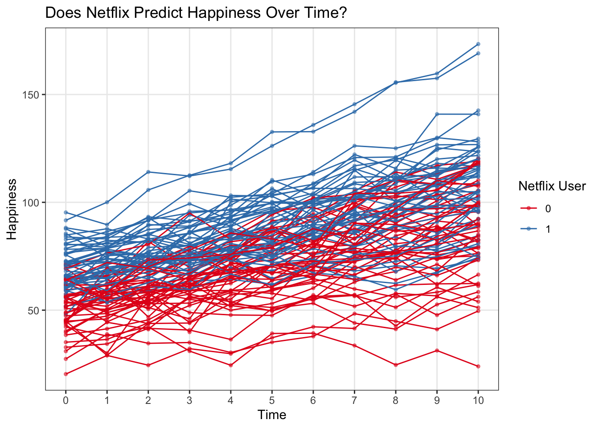 ### Raw data with a binary outcome
Visualizing the raw data for buying ice cream as a binary outcome is a bit trickier. For example, the below plot doesn’t tell us a whole lot…
It’s really easy to get away with not looking at the raw data carefully in this kind of setting (binary outcome) where we’d later use a logistic regression to model probabilities, but it is ALWAYS important to check out raw data in addition to modeling!
ggplot(multi, aes(x = happy, y = boughtIceCream, color = netflix)) +
geom_jitter(width = 0, height = .01) +
scale_color_brewer(palette = 'Set1')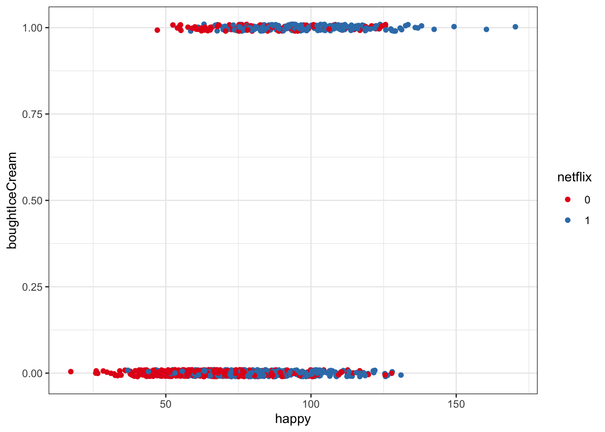
One way we can get around this is to bin happiness, then calculate the proportion buying ice cream in each group for each happiness bin. This is summarizing our data, but we are still working directly with raw data here, not making predictive models yet
- We can use cut() to brake the continuous variable happy into discrete bins, then some tidyverse tools to calculate the proportion of people who bought ice cream in each happiness bin
- In the example below, we’ve cut up happy scores into bins of 10
multiBin <- mutate(multi,
happyBin=cut(happy, seq(0,250, 10), labels = seq(5,250, 10))) %>%
group_by(happyBin, netflix) %>%
summarize(n = n(), propBoughtIceCream = sum(boughtIceCream/n)) %>%
mutate(happyNum = as.numeric(levels(happyBin)[happyBin]))## `summarise()` regrouping output by 'happyBin' (override with `.groups` argument)ggplot(multiBin, aes(x = happyNum, y = propBoughtIceCream, color = netflix)) +
geom_point() +
geom_line() +
labs(y = 'P(Bought Ice Cream)', x = 'Happiness') +
scale_color_brewer(palette = 'Set1') +
ylim(0,1)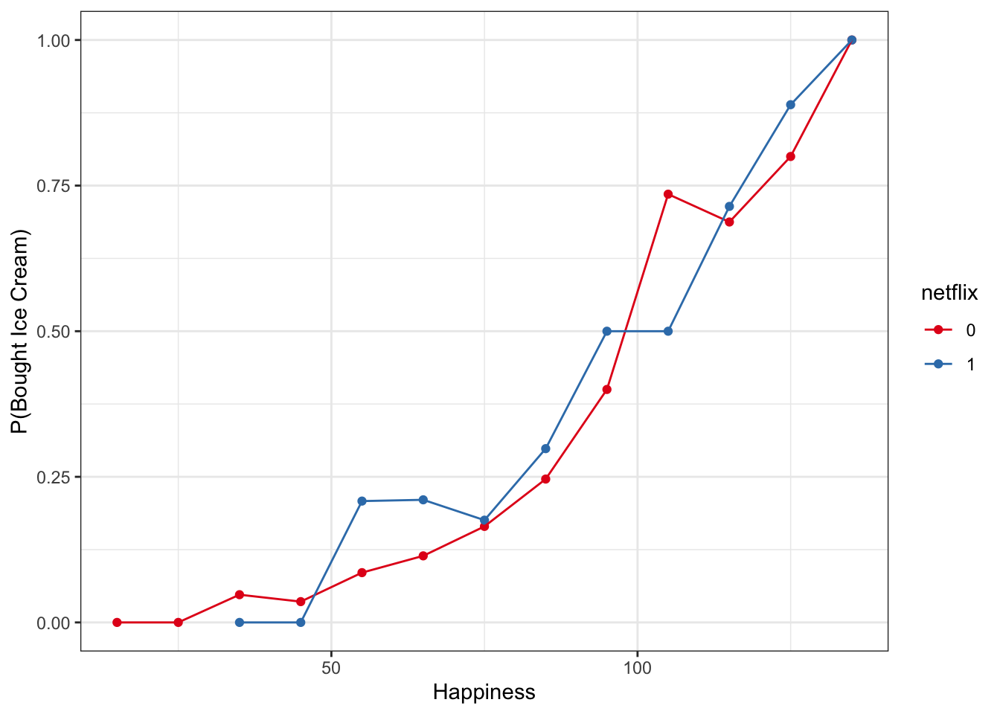
Now, let’s plot that along with the raw points
ggplot(multi, aes(x = happy, y = boughtIceCream, color = netflix)) +
geom_jitter(width = 0, height = .01) +
geom_line(data = multiBin, aes(x = happyNum, y = propBoughtIceCream, color = netflix)) +
geom_point(data = multiBin, aes(x = happyNum, y = propBoughtIceCream, color = netflix)) +
scale_color_brewer(palette = 'Set1')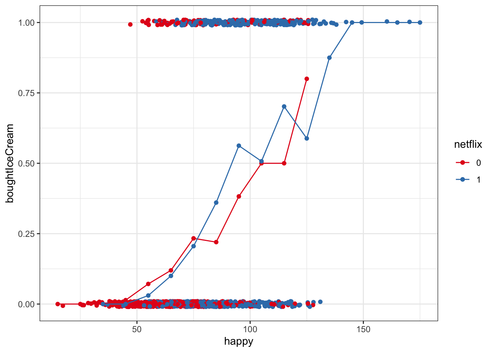 ## 3) Plotting Linear Multilevel Models
Make the models first
We’re pretty much making the same model with each of these – predicting happiness as function of time, netflix, and their interaction, and allowing each subject to have their own intercept and slope for time
mod_lme4 <- lmer(data = multi, happy ~ time*netflix + (time|subject))
mod_rstanarm <- stan_glmer(data = multi, happy ~ time*netflix + (time|subject), chains =4, cores = 4)
mod_brms <- brm(data = multi, happy ~ time*netflix + (time|subject), chains = 4, cores = 4)## Compiling Stan program...## Trying to compile a simple C file## Start samplingQuickly check out the model summaries
display(mod_lme4)## lmer(formula = happy ~ time * netflix + (time | subject), data = multi)
## coef.est coef.se
## (Intercept) 52.42 1.35
## time 4.21 0.25
## netflix1 17.14 1.98
## time:netflix1 -0.24 0.37
##
## Error terms:
## Groups Name Std.Dev. Corr
## subject (Intercept) 9.44
## time 1.75 0.13
## Residual 5.21
## ---
## number of obs: 1100, groups: subject, 100
## AIC = 7387.9, DIC = 7378.3
## deviance = 7375.1print(mod_rstanarm)## stan_glmer
## family: gaussian [identity]
## formula: happy ~ time * netflix + (time | subject)
## observations: 1100
## ------
## Median MAD_SD
## (Intercept) 52.4 1.3
## time 4.2 0.3
## netflix1 17.2 1.9
## time:netflix1 -0.3 0.4
##
## Auxiliary parameter(s):
## Median MAD_SD
## sigma 5.2 0.1
##
## Error terms:
## Groups Name Std.Dev. Corr
## subject (Intercept) 9.5
## time 1.8 0.13
## Residual 5.2
## Num. levels: subject 100
##
## ------
## * For help interpreting the printed output see ?print.stanreg
## * For info on the priors used see ?prior_summary.stanregprint(mod_brms)## Family: gaussian
## Links: mu = identity; sigma = identity
## Formula: happy ~ time * netflix + (time | subject)
## Data: multi (Number of observations: 1100)
## Samples: 4 chains, each with iter = 2000; warmup = 1000; thin = 1;
## total post-warmup samples = 4000
##
## Group-Level Effects:
## ~subject (Number of levels: 100)
## Estimate Est.Error l-95% CI u-95% CI Rhat Bulk_ESS Tail_ESS
## sd(Intercept) 9.57 0.78 8.19 11.26 1.00 1318 2228
## sd(time) 1.79 0.14 1.54 2.10 1.00 1623 2486
## cor(Intercept,time) 0.13 0.11 -0.09 0.34 1.01 759 1328
##
## Population-Level Effects:
## Estimate Est.Error l-95% CI u-95% CI Rhat Bulk_ESS Tail_ESS
## Intercept 52.35 1.35 49.71 55.03 1.00 1094 2082
## time 4.22 0.25 3.71 4.71 1.00 989 1520
## netflix1 17.10 2.02 13.14 21.08 1.00 1051 1802
## time:netflix1 -0.23 0.37 -0.96 0.52 1.00 1119 1811
##
## Family Specific Parameters:
## Estimate Est.Error l-95% CI u-95% CI Rhat Bulk_ESS Tail_ESS
## sigma 5.21 0.13 4.97 5.47 1.00 5762 2930
##
## Samples were drawn using sampling(NUTS). For each parameter, Bulk_ESS
## and Tail_ESS are effective sample size measures, and Rhat is the potential
## scale reduction factor on split chains (at convergence, Rhat = 1).save(mod_brms, mod_rstanarm, mod_lme4, file = 'models.rda')Plotting Population-Level (‘fixed’) Effects
It is often very useful to plot the population-level predictions are models are making, and just as importantly, the predictive uncertainty.
Information here is from Jared Knowles and Carl Frederick: https://cran.r-project.org/web/packages/merTools/vignettes/Using_predictInterval.html
In order to generate a proper prediction interval, a prediction must account for three sources of uncertainty in mixed models:
- the residual (observation-level) variance,
- the uncertainty in the fixed coefficients, and
- the uncertainty in the variance parameters for the grouping factors.
A fourth, uncertainty about the data, is beyond the scope of any prediction method.
With the Bayesian models, we can work with all three for our intervals, but this is more difficult with the lme4 model.
Note – most model fits that are plotted in the literature tend to be the marginal effects, showing the predictive uncertainty of the fitted fixed-effect regression lines only, not includeing all sources of uncertainty. Still, it’s important to be able to plot and consider all sources of predictive uncertainty, especially if we are considering a framework in which we want to derrive predictions from our models!
lme4
With lme4, we can use the effects package to extract model estimates, standard errors, and prediction intervals about the ‘fitted’ regression line given certain levels of our predictor variables. However, it seems that this method does NOT incorporate the observation-level variance in the predictive uncertainty.
require(effects)## Loading required package: effects## Loading required package: carData## lattice theme set by effectsTheme()
## See ?effectsTheme for details.effect_time <- as.data.frame(effect('time:netflix', mod_lme4, confint=list(alpha = .95)), xlevels = list(time = 0:10, netflix = c('0','1')))
head(effect_time)## time netflix fit se lower upper
## 1 0 0 52.42146 1.345196 49.78201 55.06091
## 2 2 0 60.84884 1.458245 57.98757 63.71010
## 3 5 0 73.48989 1.877387 69.80622 77.17357
## 4 8 0 86.13095 2.455595 81.31275 90.94915
## 5 10 0 94.55833 2.883633 88.90026 100.21639
## 6 0 1 69.56018 1.457483 66.70041 72.41996Let’s plot these predictions
fitLmePlot <- ggplot(data = effect_time, aes(x = time, y = fit)) +
geom_line(aes(color = netflix), lwd = 2) +
geom_ribbon(aes(ymin = lower, ymax = upper, fill = netflix), alpha = .5) +
scale_x_continuous(breaks = 0:10) +
theme(panel.grid.minor = element_blank()) +
scale_color_brewer(palette = 'Set1') +
scale_fill_brewer(palette = 'Set1') +
labs(x = 'Time', y = 'Happiness', title = 'Fitted Line - Lme4') +
ylim(30,130)Then we can plot them with the raw data as well
ggplot(data = effect_time, aes(x = time, y = fit, color = netflix)) +
geom_point() +
geom_line(lwd = 2) +
geom_ribbon(aes(ymin = lower, ymax = upper, fill = netflix), alpha = .7, colour = NA) +
scale_x_continuous(breaks = 0:10) +
theme(panel.grid.minor = element_blank()) +
scale_color_brewer(palette = 'Set1') +
labs(x = 'Time', y = 'Happiness', title = 'Does Netflix Predict Happiness Over Time?') +
geom_point(data = multi, aes(x = time, y = happy), alpha = .5, size = 1) +
geom_line(data = multi, aes(x = time, y = happy, group = subject), alpha = .2) 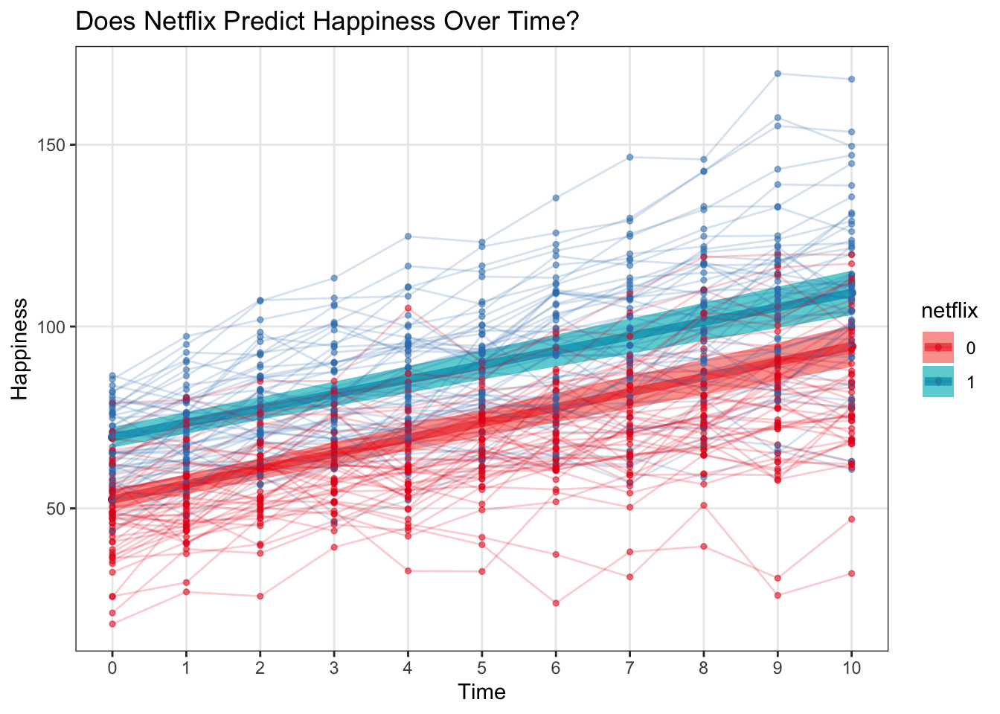
One thing we also want to check if if the residuals are correlated with the predicted values…in a linear regression framework it’s a sign of a bad model if these are correlated
We can get the predicted estimates with predict() * Note that with lme4, calling predict() on the model object just spits out predicted estimates for each observation
multi <- mutate(multi,
lme4preds = predict(mod_lme4),
lme4resids = happy - lme4preds)
ggplot(multi, aes(x = lme4preds, y = lme4resids)) +
geom_point() +
stat_smooth(method = 'lm') +
labs(x = 'predicted happiness values', y = 'residuals', title = 'this looks okay') +
theme_bw()## `geom_smooth()` using formula 'y ~ x'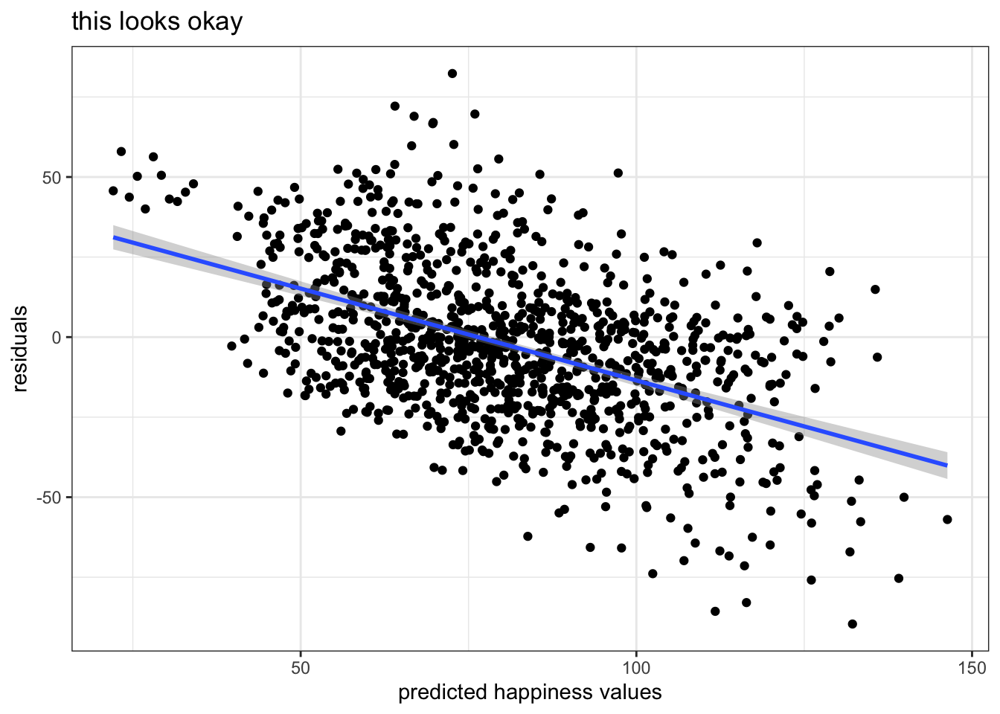
brms
First, we basically creat a grid of the values for which we want to predict estimates. So, basically, we’ll tell the models to make us a prediction for each possible level of time and netflix
newx <- expand.grid(time = 0:10, netflix = c('0', '1'))
head(newx)## time netflix
## 1 0 0
## 2 1 0
## 3 2 0
## 4 3 0
## 5 4 0
## 6 5 0Now, we use the predict() function! With brms, predict actually returns predictive uncertainty in the form of the standard error of the posterior predictive distribution for that set of predictors.
* If we use re_formula = NA then group-level effects (in our dataset each subject is a ‘group’) will not be considered in the prediction
* If we use re_formula = NULL (the default) then all group-level effects will be considered
predict_interval_brms <- predict(mod_brms, newdata = newx, re_formula = NA) %>%
cbind(newx,.)
head(predict_interval_brms)## time netflix Estimate Est.Error Q2.5 Q97.5
## 1 0 0 52.47091 5.498230 41.35435 63.32833
## 2 1 0 56.61624 5.296587 46.23555 66.86682
## 3 2 0 60.76073 5.422439 50.22709 71.21874
## 4 3 0 64.89987 5.374942 54.13888 75.15237
## 5 4 0 69.25524 5.543859 58.28477 80.05358
## 6 5 0 73.33556 5.525876 62.74840 84.38664What’s the difference between fitted() and predict() when called on a brms model? * You can think of fitted() as generating the ‘regression line’ * fitted() does not incorporate the measurment error on the observation level, so the variance about the predictions is smaller – this is more what we’re talking about when we plot the ‘regression line’ or the uncertainty about the population-level predictive estimate only * Estimated means extracted from both methods should be very similar * More info: https://rdrr.io/cran/brms/man/fitted.brmsfit.html
Let’s plot these brms predictions – as we can see, the 95% CI including predictive uncertainty from the measurement level is considerably larger than that generated by lme4 without
ggplot(data = predict_interval_brms, aes(x = time, y = Estimate, color = netflix)) +
geom_point() +
geom_line() +
geom_ribbon(aes(ymin = `Q2.5`, ymax = `Q97.5`, fill = netflix), alpha = .1, colour = NA) +
scale_x_continuous(breaks = 0:10) +
theme(panel.grid.minor = element_blank()) +
scale_color_brewer(palette = 'Set1') +
labs(x = 'Time', y = 'Happiness', title = 'Does Netflix Predict Happiness Over Time?')  With the raw data…
With the raw data…
ggplot(data = predict_interval_brms, aes(x = time, y = Estimate, color = netflix)) +
geom_point() +
geom_line(lwd = 2) +
geom_ribbon(aes(ymin = `Q2.5`, ymax = `Q97.5`, fill = netflix), alpha = .5, colour = NA) +
scale_x_continuous(breaks = 0:10) +
theme(panel.grid.minor = element_blank()) +
scale_color_brewer(palette = 'Set1') +
labs(x = 'Time', y = 'Happiness', title = 'Does Netflix Predict Happiness Over Time?') +
geom_point(data = multi, aes(x = time, y = happy), alpha = .5, size = 1) +
geom_line(data = multi, aes(x = time, y = happy, group = subject), alpha = .2) 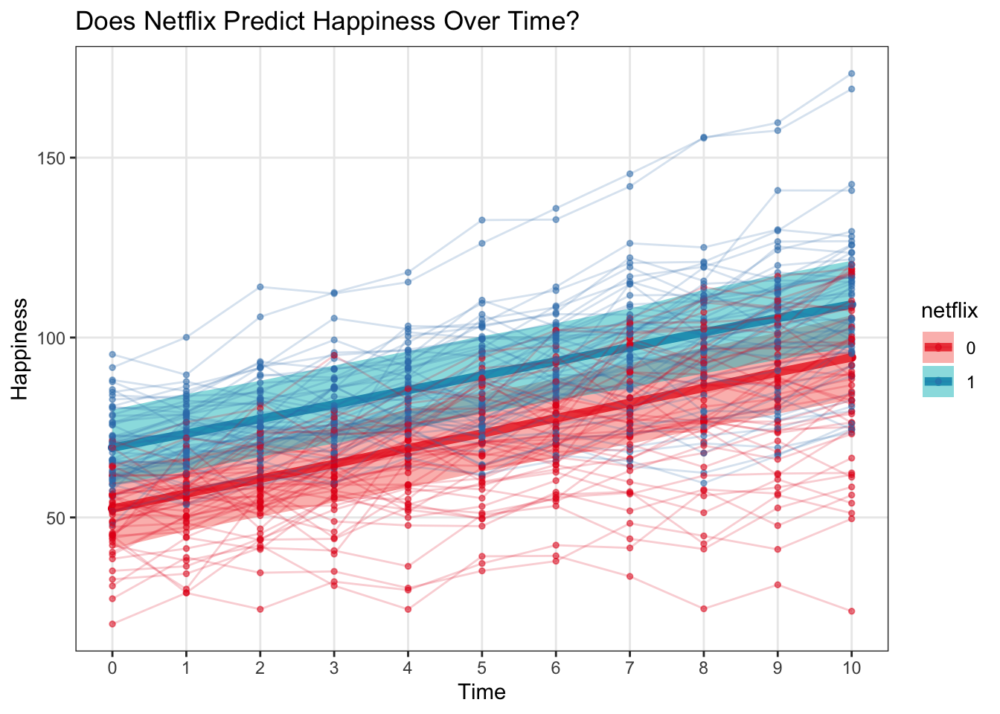
Let’s compare this to using fitted()
fitted_interval_brms <- fitted(mod_brms, newdata = newx, re_formula = NA) %>%
cbind(newx,.)
predictBrmsPlot <- ggplot(data = predict_interval_brms, aes(x = time, y = Estimate, color = netflix)) +
geom_point() +
geom_line(lwd = 2) +
geom_ribbon(aes(ymin = `Q2.5`, ymax = `Q97.5`, fill = netflix), alpha = .5, colour = NA) +
scale_x_continuous(breaks = 0:10) +
theme(panel.grid.minor = element_blank()) +
scale_color_brewer(palette = 'Set1') +
scale_fill_brewer(palette = 'Set1') +
labs(x = 'Time', y = 'Happiness', title = 'Predict - brms') +
ylim(30, 130)
fittedBrmsPlot <- ggplot(data = fitted_interval_brms, aes(x = time, y = Estimate, color = netflix)) +
geom_point() +
geom_line(lwd = 2) +
geom_ribbon(aes(ymin = `Q2.5`, ymax = `Q97.5`, fill = netflix), alpha = .5, colour = NA) +
scale_x_continuous(breaks = 0:10) +
theme(panel.grid.minor = element_blank()) +
scale_color_brewer(palette = 'Set1') +
scale_fill_brewer(palette = 'Set1') +
labs(x = 'Time', y = 'Happiness', title = 'Fitted - brms') +
ylim(30,130)
grid.arrange(predictBrmsPlot, fittedBrmsPlot, ncol = 2) #### rstanarm
#### rstanarm
Rstanarm outputs a slightly different type of object from brms (a stanreg object) so the syntax for extracting the estimates is slightly different, but the actual estimates are almost identical
We can use predictive_interval on the rstanarm model to get the posterior predictive interval for specific levels of our input variables
* re.form works the same way re_formula does with brms
Alternatively, we can use posterior_predict to generate samples, and then take quantiles of those to get our predictive interval
interval_rstanarm <- (predictive_interval(mod_rstanarm, newdata = newx, re.form = NA, prob = .95)) %>%
cbind(newx, .)
# Generate the posterior samples for the predictor values in newx
rstan_posterior_predictions <- rstanarm::posterior_predict(mod_rstanarm, newdata = newx, re.form = NA)
# Get the median of the posterior distribution for each of those values
stan_median <- cbind(apply(rstan_posterior_predictions,2, median))
# Bind back to newx dataframe
interval_rstanarm <- cbind(interval_rstanarm,stan_median)Plot the rstanarm estimates next to the brms ones. This makes sense they should be the same…since they’re doing the same stuff under the hood
predictRstanarmPlot <- ggplot(data = interval_rstanarm, aes(x = time, y = stan_median, color = netflix)) +
geom_point() +
geom_line(lwd = 2) +
geom_ribbon(aes(ymin = `2.5%`, ymax = `97.5%`, fill = netflix), alpha = .5, colour = NA) +
scale_x_continuous(breaks = 0:10) +
theme(panel.grid.minor = element_blank()) +
scale_color_brewer(palette = 'Set1') +
labs(x = 'Time', y = 'Happiness', title = 'Rstanarm') +
ylim(30, 130)
grid.arrange(predictRstanarmPlot, predictBrmsPlot, ncol = 2)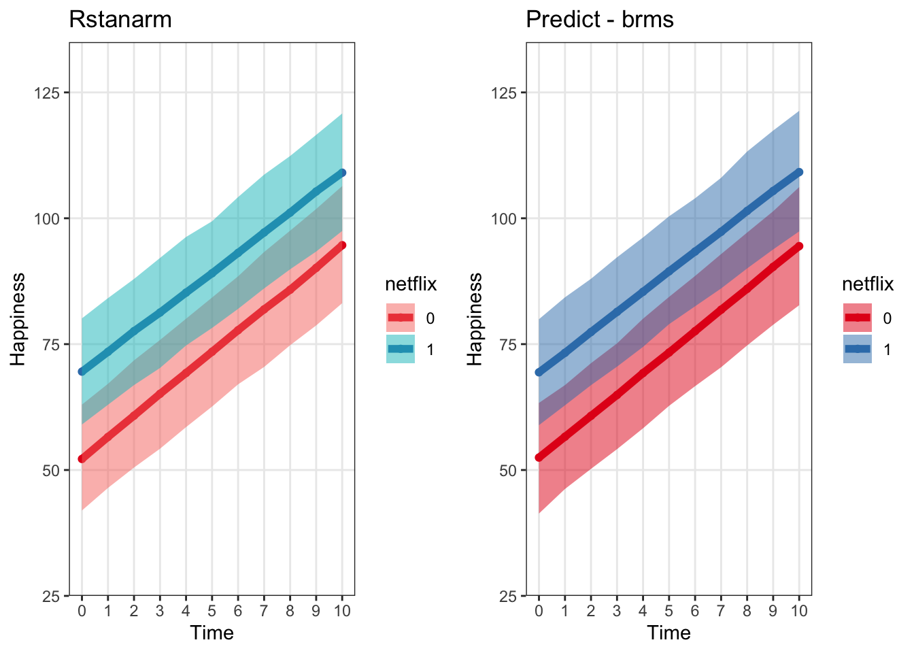
To get fitted values of the predictors without the extra uncertainty on the observation level, we can call posterior_linpred on rstanarm models.
# Generate the fitted posterior samples for the predictor values in newx
rstanarm_fitted_predictions <- posterior_linpred(mod_rstanarm, newdata = newx, re.form = NA)
rstanarm_fitted_predictions <- t(cbind(apply(rstanarm_fitted_predictions,2, quantile, c(.025, .5, .975))))
rstanarm_fitted_predictions <- cbind(newx, rstanarm_fitted_predictions)
fittedRstanarmPlot <- ggplot(data = rstanarm_fitted_predictions, aes(x = time, y = `50%`, color = netflix)) +
geom_point() +
geom_line(lwd = 2) +
geom_ribbon(aes(ymin = `2.5%`, ymax = `97.5%`, fill = netflix), alpha = .5, colour = NA) +
scale_x_continuous(breaks = 0:10) +
theme(panel.grid.minor = element_blank()) +
scale_color_brewer(palette = 'Set1') +
scale_fill_brewer(palette = 'Set1') +
labs(x = 'Time', y = 'Happiness', title = 'Fitted - Rstanarm') +
ylim(30,130)Now we can see that if we plot the linear predictor + uncertainty for that predictor, across all three packages it comes out very similarly – assuming we’re using only very weak priors with brms and rstanarm
grid.arrange(fittedBrmsPlot, fittedRstanarmPlot, fitLmePlot, ncol = 3) Let’s look at them all on one plot to double check
Let’s look at them all on one plot to double check
# Get the data wrangled to combine into one frame
names(fitted_interval_brms)[names(fitted_interval_brms) == 'Estimate'] <- 'fit'
names(fitted_interval_brms)[names(fitted_interval_brms) == '2.5%ile'] <- 'lower'
names(fitted_interval_brms)[names(fitted_interval_brms) == '97.5%ile'] <- 'upper'
fitted_interval_brms$package <- 'brms'
names(rstanarm_fitted_predictions)[names(rstanarm_fitted_predictions) == '50%'] <- 'fit'
names(rstanarm_fitted_predictions)[names(rstanarm_fitted_predictions) == '2.5%'] <- 'lower'
names(rstanarm_fitted_predictions)[names(rstanarm_fitted_predictions) == '97.5%'] <- 'upper'
rstanarm_fitted_predictions$package <- 'rstanarm'
effect_time$package <- 'lme4'
fittedAllModels <- plyr::rbind.fill(effect_time, fitted_interval_brms, rstanarm_fitted_predictions) %>%
mutate(netflix = case_when(netflix == '1' ~ 'netflix', netflix == '0' ~ 'no netflix'))
# I've jittered the height of the points just a bit here to make them distinguishable from each other, but it's pretty clear how similar they are
ggplot(fittedAllModels, aes(x = time, y = fit, color = package, group = netflix)) +
geom_jitter(size =3, alpha = .3, width = 0, height = .5) +
geom_line() +
geom_line(aes(x = time, y = upper, group = interaction(netflix, package), color = package), lty = 2) +
geom_line(aes(x = time, y = lower, group = interaction(netflix, package), color = package), lty = 2) +
theme_bw() +
labs(x = 'Time', y = 'Fitted Prediciton + Linear Predictor Interval', title = 'Very Similar Predictive Uncertainty Across Packages') +
facet_wrap('netflix') +
scale_color_brewer(palette = 'Dark2')## Warning: Removed 22 row(s) containing missing values (geom_path).
## Warning: Removed 22 row(s) containing missing values (geom_path).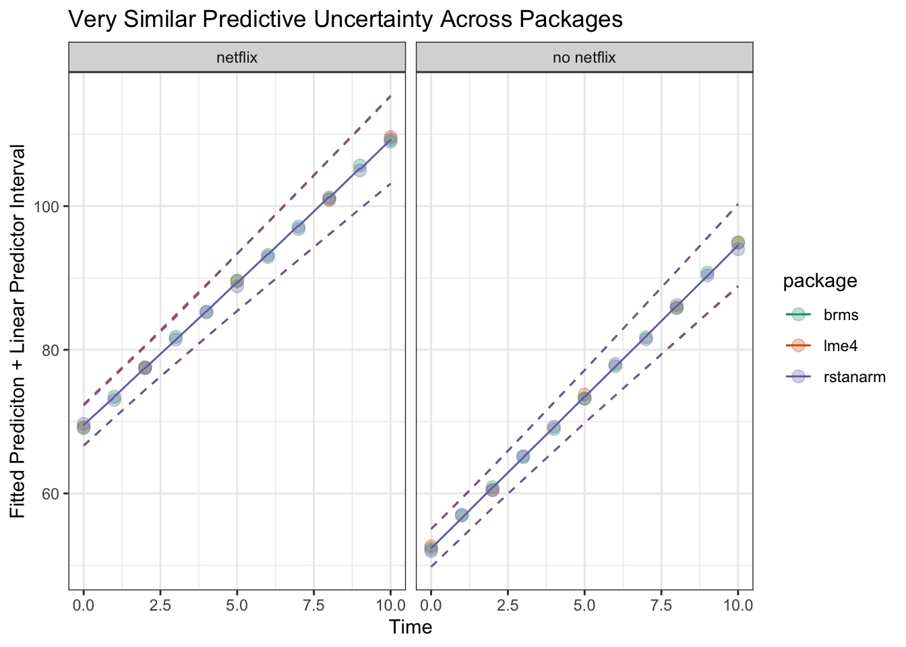
Spaghetti Plots with subject-level model fits
Often, we want to see what kind of predictions our hierarchical models are making on the level of groups (in our experiments, the ‘group’ is often the subject). We can check these with ‘spaghetti’ plots displaying the fit for each of our subjects.
Spaghetti plot with lme4
To get the model’s predicted outcome for each original datapoint entered into the model in lme4, we can actually just call predict right on the model object. Then we can bind it back to the original dataframe
predict_subject_lme4 <- cbind(multi, lme_prediction = predict(mod_lme4))Now, we can generate the spaghetti plot in much of the same way that we generated the population-level fitted lines
- All we have to do is add an additional geom_line() using our subject-level data frame with the argument
group = subject
spagLmePlot <- ggplot(data = effect_time, aes(x = time, y = fit)) +
geom_line(aes(color = netflix), lwd = 2) +
geom_ribbon(aes(ymin = lower, ymax = upper, fill = netflix), alpha = .5) +
scale_x_continuous(breaks = 0:10) +
theme(panel.grid.minor = element_blank()) +
labs(x = 'Time', y = 'Happiness', title = 'Fitted Line + Spaghetti with Lme4') +
ylim(30,130) +
geom_line(data = predict_subject_lme4, aes(x = time, y = lme_prediction, group = subject, color = netflix), alpha = .3) +
scale_color_brewer(palette = 'Set1') +
scale_fill_brewer(palette = 'Set1')
spagLmePlot## Warning: Removed 18 row(s) containing missing values (geom_path).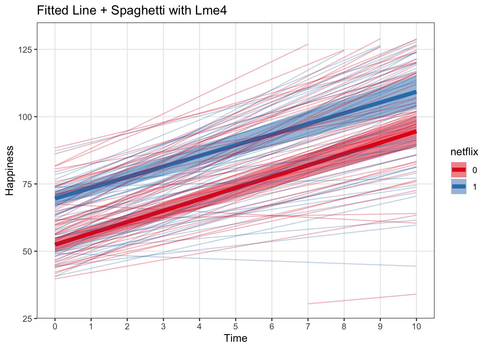
This helps us visualize how much between-subject heterogeneity there is. Seems like people are remarkably similar to each other in this dataset!
Brms Spaghetti plots with subjects
This can be done in a very similar manner to lme4, except that calling predict() on a brms object actually gives us predictive uncertainty as well as the fitted estimate.
predict_subjects_brms <- predict(mod_brms) %>%
cbind(multi, .) %>%
dplyr::select(subject, netflix, time, happy, Estimate, `Q2.5`, `Q97.5`)We can see now that we can get a dataframe with exactly the same structure as the original data input into the model. We even get predictive uncertainty about each timepoint for each subject. That could be useful later, but might be too much for our spaghetti plot
head(predict_subjects_brms)## subject netflix time happy Estimate Q2.5 Q97.5
## 1 1 1 0 75.48652 55.14718 43.62458 66.73616
## 2 1 1 1 81.05440 58.06104 46.88268 69.43113
## 3 1 1 2 90.07381 61.08958 50.22286 72.20780
## 4 1 1 3 97.00656 64.24248 53.13048 75.12568
## 5 1 1 4 96.63311 67.15215 56.23121 78.09672
## 6 1 1 5 96.95771 70.23071 59.49224 80.76879Now, plot just like with lme4
spagBrmsPlot <- ggplot(data = predict_interval_brms, aes(x = time, y = Estimate, color = netflix)) +
geom_point() +
geom_line(lwd = 2) +
geom_ribbon(aes(ymin = `Q2.5`, ymax = `Q97.5`, fill = netflix), alpha = .5, colour = NA) +
scale_x_continuous(breaks = 0:10) +
theme(panel.grid.minor = element_blank()) +
scale_color_brewer(palette = 'Set1') +
scale_fill_brewer(palette = 'Set1') +
labs(x = 'Time', y = 'Happiness', title = 'Spaghetti + Predictive Uncertainty on all levels - brms') +
ylim(30, 130) +
geom_line(data = predict_subjects_brms, aes(x = time, y = Estimate, group = subject), alpha = .3)
spagBrmsPlot## Warning: Removed 18 row(s) containing missing values (geom_path).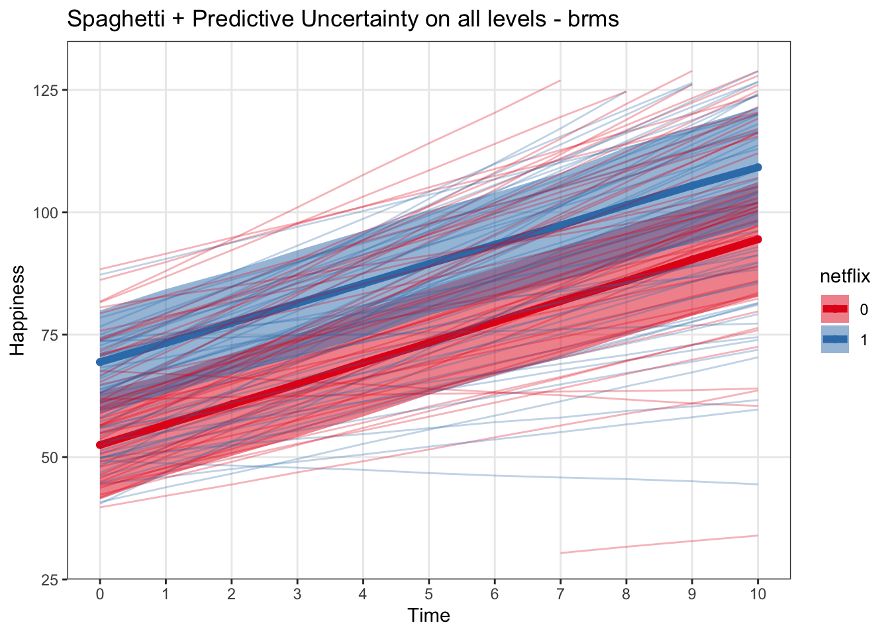
Spaghetti plot with rstanarm
predict_subject_rstanarm <- rstanarm::posterior_predict(mod_rstanarm)
predict_subject_rstanarm <- cbind(apply(predict_subject_rstanarm,2, median), multi)
names(predict_subject_rstanarm)[names(predict_subject_rstanarm)== 'apply(predict_subject_rstanarm, 2, median)'] <- 'fit'
subsRstanarmPlot <- ggplot(data = rstanarm_fitted_predictions, aes(x = time, y = fit, color = netflix)) +
geom_point() +
geom_line(lwd = 2) +
geom_ribbon(aes(ymin = lower, ymax = upper, fill = netflix), alpha = .5, colour = NA) +
scale_x_continuous(breaks = 0:10) +
theme(panel.grid.minor = element_blank()) +
scale_color_brewer(palette = 'Set1') +
scale_fill_brewer(palette = 'Set1') +
labs(x = 'Time', y = 'Happiness', title = 'Fitted rstanarm + spaghetti subjects') +
ylim(30,130) +
geom_line(data = predict_subject_rstanarm, aes(x = time, y = fit, group = subject))
subsRstanarmPlot## Warning: Removed 18 row(s) containing missing values (geom_path).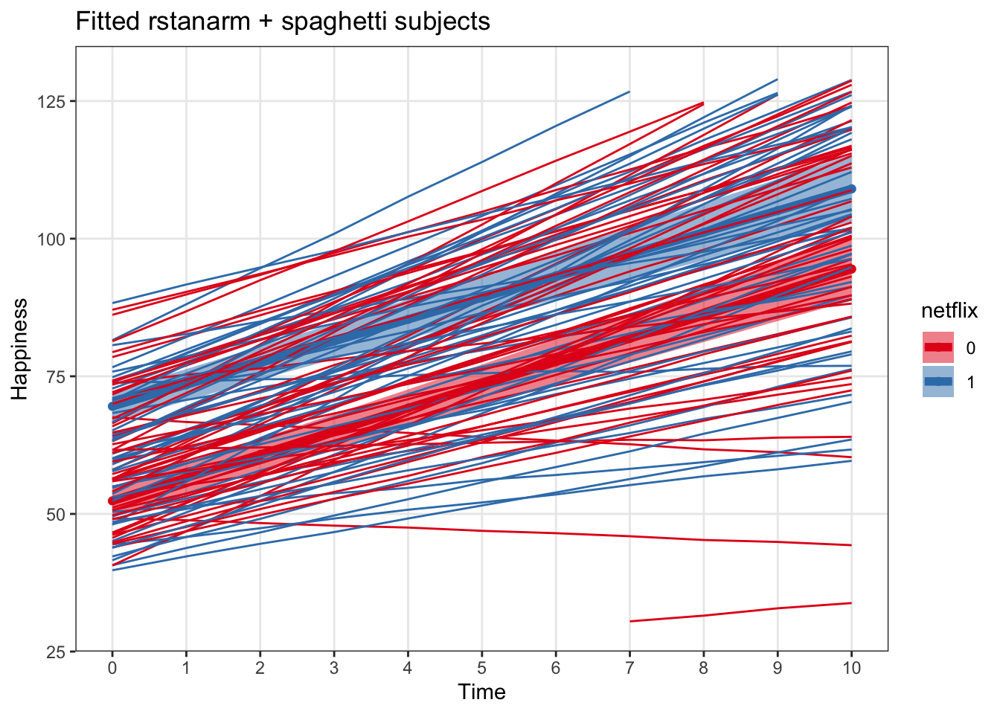
4) Linear model comparison – rstanarm model with weak vs. strong priors
Warning! These priors are just meant to serve as an example and are definitely not meant to represent the kinds of priors we might use often in our work. For more information on priors, check out:
- https://cran.r-project.org/web/packages/rstanarm/vignettes/priors.html
- http://mc-stan.org/users/documentation/case-studies/weakly_informative_shapes.html
These models are also simplified a little bit to have no interaction term between time and netflix, and random intercepts but not random slopes.
Let’s say we have strong prior evidence for some reason that the coefficient for time would be around 5 and netflix would be around 20 (we know the true state of this simulation!)
myprior <- normal(location = c(4, 20), scale = c(1,1), autoscale = FALSE)
mod_rstanarm_priors <- stan_glmer(data = multi, happy ~ time + netflix + (1|subject), chains =4, cores = 4, prior = myprior)## Warning: Bulk Effective Samples Size (ESS) is too low, indicating posterior means and medians may be unreliable.
## Running the chains for more iterations may help. See
## http://mc-stan.org/misc/warnings.html#bulk-essmod_rstanarm_weak_priors <- stan_glmer(data = multi, happy ~ time + netflix + (1|subject), chains =4, cores = 4)## Warning: The largest R-hat is 1.06, indicating chains have not mixed.
## Running the chains for more iterations may help. See
## http://mc-stan.org/misc/warnings.html#r-hat
## Warning: Bulk Effective Samples Size (ESS) is too low, indicating posterior means and medians may be unreliable.
## Running the chains for more iterations may help. See
## http://mc-stan.org/misc/warnings.html#bulk-ess## Warning: Tail Effective Samples Size (ESS) is too low, indicating posterior variances and tail quantiles may be unreliable.
## Running the chains for more iterations may help. See
## http://mc-stan.org/misc/warnings.html#tail-essWe can check out the priors here
prior_summary(mod_rstanarm_priors)## Priors for model 'mod_rstanarm_priors'
## ------
## Intercept (after predictors centered)
## Specified prior:
## ~ normal(location = 81, scale = 2.5)
## Adjusted prior:
## ~ normal(location = 81, scale = 54)
##
## Coefficients
## ~ normal(location = [ 4,20], scale = [1,1])
##
## Auxiliary (sigma)
## Specified prior:
## ~ exponential(rate = 1)
## Adjusted prior:
## ~ exponential(rate = 0.046)
##
## Covariance
## ~ decov(reg. = 1, conc. = 1, shape = 1, scale = 1)
## ------
## See help('prior_summary.stanreg') for more detailsprior_summary(mod_rstanarm_weak_priors)## Priors for model 'mod_rstanarm_weak_priors'
## ------
## Intercept (after predictors centered)
## Specified prior:
## ~ normal(location = 81, scale = 2.5)
## Adjusted prior:
## ~ normal(location = 81, scale = 54)
##
## Coefficients
## Specified prior:
## ~ normal(location = [0,0], scale = [2.5,2.5])
## Adjusted prior:
## ~ normal(location = [0,0], scale = [ 17.19,109.04])
##
## Auxiliary (sigma)
## Specified prior:
## ~ exponential(rate = 1)
## Adjusted prior:
## ~ exponential(rate = 0.046)
##
## Covariance
## ~ decov(reg. = 1, conc. = 1, shape = 1, scale = 1)
## ------
## See help('prior_summary.stanreg') for more detailsAnd see how they affected the model fits here
print(mod_rstanarm_priors)## stan_glmer
## family: gaussian [identity]
## formula: happy ~ time + netflix + (1 | subject)
## observations: 1100
## ------
## Median MAD_SD
## (Intercept) 51.5 1.4
## time 4.1 0.1
## netflix1 19.5 0.9
##
## Auxiliary parameter(s):
## Median MAD_SD
## sigma 7.8 0.2
##
## Error terms:
## Groups Name Std.Dev.
## subject (Intercept) 13.7
## Residual 7.8
## Num. levels: subject 100
##
## ------
## * For help interpreting the printed output see ?print.stanreg
## * For info on the priors used see ?prior_summary.stanregprint(mod_rstanarm_weak_priors)## stan_glmer
## family: gaussian [identity]
## formula: happy ~ time + netflix + (1 | subject)
## observations: 1100
## ------
## Median MAD_SD
## (Intercept) 53.0 2.0
## time 4.1 0.1
## netflix1 16.1 2.7
##
## Auxiliary parameter(s):
## Median MAD_SD
## sigma 7.8 0.2
##
## Error terms:
## Groups Name Std.Dev.
## subject (Intercept) 13.6
## Residual 7.8
## Num. levels: subject 100
##
## ------
## * For help interpreting the printed output see ?print.stanreg
## * For info on the priors used see ?prior_summary.stanregNow let’s plot the fitted predictions of the regression line as before
priors_predictions <- posterior_linpred(mod_rstanarm_priors, newdata = newx, re.form = NA)
priors_predictions <- t(cbind(apply(priors_predictions,2, quantile, c(.025, .5, .975))))
priors_predictions <- cbind(newx, priors_predictions) %>%
mutate(model = 'Strong Prior')
weak_priors_predictions <- posterior_linpred(mod_rstanarm_weak_priors, newdata = newx, re.form = NA)
weak_priors_predictions <- t(cbind(apply(weak_priors_predictions,2, quantile, c(.025, .5, .975))))
weak_priors_predictions <- cbind(newx, weak_priors_predictions) %>%
mutate(model = 'Weak Prior')
priorComparison <- rbind(priors_predictions, weak_priors_predictions) %>%
mutate(netflix = case_when(netflix == '1' ~ 'netflix', netflix == '0' ~ 'no netflix'))
ggplot(priorComparison, aes(x = time, y = `50%`, color = model)) +
geom_line() +
facet_wrap('netflix')+
geom_line(aes(x = time, y = `2.5%`, color = model), lty = 2) +
geom_line(aes(x = time, y = `97.5%`, color = model), lty = 2) +
theme_bw() +
labs(x = 'Time', y = 'Fitted Prediciton + Linear Predictor Interval', title = 'Strong vs. Weak Priors') +
scale_color_brewer(palette = 'Dark2') +
scale_x_continuous(breaks = 0:10) +
theme(panel.grid.minor = element_blank())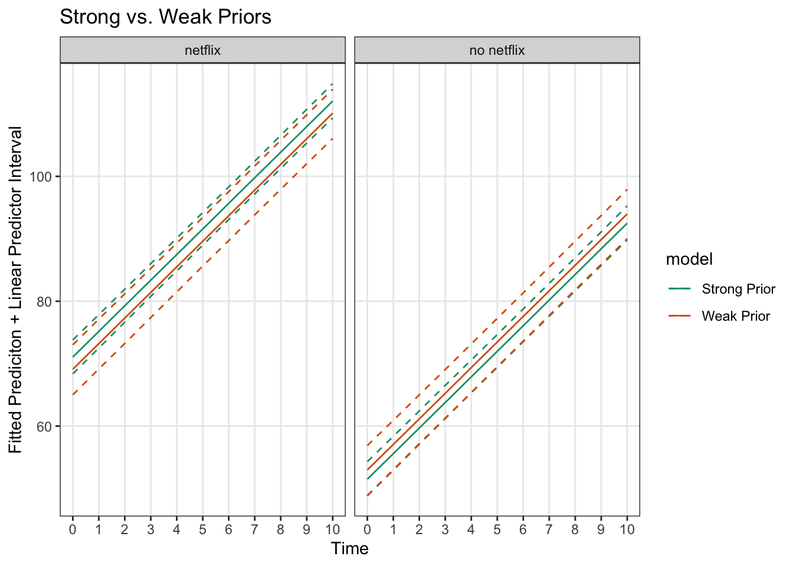
The differences aren’t huge (since there is a fair amount of data and the priors match the ‘true’ distributions), but we can see the predictive uncertainty about the fitted line is less for the stronger priors.
5) Plotting Multilevel Logistic Regression Models
While logistic regression differs in some ways from linear regression, the practice for plotting from the models are quite similar.
Logistic Regression Models in Lme4 and Rstanarm
Here we set up the models to predict probability of buying ice cream from happiness and netflix usership. We add allow intercepts and the effect of happiness to very across individuals.
- For brevity’s sake I’ve left brms out here, but the model would be basically identical to the rstanarm and the plotting would be the same as that in the previous sections
multi$happy_z = (multi$happy - mean(multi$happy))/sd(multi$happy)
logistic_lme4 <- glmer(data = multi, boughtIceCream ~ happy_z + netflix + (happy_z|subject), family = binomial(link = 'logit'))## boundary (singular) fit: see ?isSingularlogistic_rstanarm <- stan_glmer(data = multi, boughtIceCream ~ happy_z + netflix + (happy_z|subject), family = binomial(link = 'logit'), cores = 4, chains = 4)One disadvantage with lme4 models is that with tougher nonlinear models, they sometimes fail to converge. So, let’s go with the rstanarm one in this case
print(logistic_lme4)## Generalized linear mixed model fit by maximum likelihood (Laplace
## Approximation) [glmerMod]
## Family: binomial ( logit )
## Formula: boughtIceCream ~ happy_z + netflix + (happy_z | subject)
## Data: multi
## AIC BIC logLik deviance df.resid
## 1114.5618 1144.5802 -551.2809 1102.5618 1094
## Random effects:
## Groups Name Std.Dev. Corr
## subject (Intercept) 0.1551
## happy_z 0.1660 1.00
## Number of obs: 1100, groups: subject, 100
## Fixed Effects:
## (Intercept) happy_z netflix1
## -1.1338 1.1774 0.2083
## convergence code 0; 0 optimizer warnings; 1 lme4 warningsprint(logistic_rstanarm)## stan_glmer
## family: binomial [logit]
## formula: boughtIceCream ~ happy_z + netflix + (happy_z | subject)
## observations: 1100
## ------
## Median MAD_SD
## (Intercept) -1.1 0.1
## happy_z 1.2 0.1
## netflix1 0.2 0.2
##
## Error terms:
## Groups Name Std.Dev. Corr
## subject (Intercept) 0.18
## happy_z 0.20 0.15
## Num. levels: subject 100
##
## ------
## * For help interpreting the printed output see ?print.stanreg
## * For info on the priors used see ?prior_summary.stanregPlotting the logistic regression model fits in rstanarm
Lets set up a new grid of predictor values for this model
a <- seq(from = min(multi$happy_z) - .1, to = max (multi$happy_z) + .1, by = .25)
logit_grid <- expand.grid(happy_z = a, netflix = c('0', '1'))
logistic_predictions <- posterior_linpred(logistic_rstanarm, newdata = logit_grid, re.form = NA)
logistic_predictions <- t(cbind(apply(logistic_predictions,2, quantile, c(.025, .5, .975))))
logistic_predictions <- cbind(logit_grid, logistic_predictions)
# transform to a 0-1 scale using the invlogit function
logistic_predictions$prob = invlogit(logistic_predictions$`50%`)
logistic_predictions$lwr = invlogit(logistic_predictions$`2.5%`)
logistic_predictions$upr = invlogit(logistic_predictions$`97.5%`)
# get happiness back on the normal scale
logistic_predictions$happy = (logistic_predictions$happy_z*sd(multi$happy)) + mean(multi$happy)logitplot1 <- ggplot(data = logistic_predictions, aes(x = happy, y = prob)) +
geom_line(aes(color = netflix)) +
geom_ribbon(aes(ymin = lwr, ymax = upr, fill = netflix), alpha = .2) +
scale_color_brewer(palette = 'Set1') +
scale_fill_brewer(palette = 'Set1') +
labs(x = 'Happiness', y = 'P(Bought Ice Cream)', title = 'Ice Cream Purchase Likelihood as a factor of happiness and netflix usership')
logitplot1
Plotting fitted model + binned raw data
This can be a good check to see whether our model is making sensible predictions. It is important to keep in mind, however, that the raw data bins are not adjusting for any other variables, while the model predictions are based on the values of the predictors in the predictor grid that was used to generate them.
logitplot1 +
geom_line(data = multiBin, aes(x = happyNum, y = propBoughtIceCream, color = netflix)) +
geom_point(data = multiBin, aes(x = happyNum, y = propBoughtIceCream, color = netflix)) 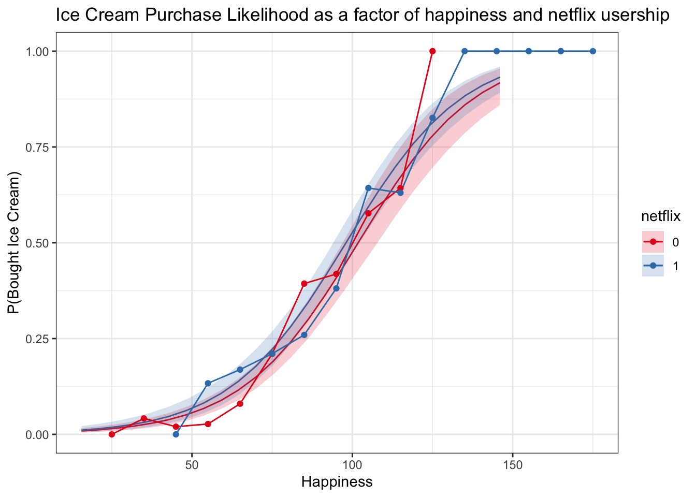
Logistic Regression Spaghetti Plot
Now we can use posterior_linpred() again with the transform = TRUE argument and no new data to get predictions for the original datapoints.
* It seems a bit strange to use posterior_linpred() when we’re predicting for subjects, but posterior_predict() in this case will give us predictions of 0s and 1s, not probabilities – it would be predicting actual outcome values
logistic_subject_preds <- posterior_linpred(logistic_rstanarm,transform = TRUE)## Instead of posterior_linpred(..., transform=TRUE) please call posterior_epred(), which provides equivalent functionality.logistic_subject_preds <- t(cbind(apply(logistic_subject_preds,2, quantile, c(.025, .5, .975))))
logistic_subject_preds <- cbind(multi, logistic_subject_preds)
spag_logit_plot <- logitplot1 +
geom_line(data = logistic_subject_preds, aes(x = happy, y = `50%`, group = subject, color = netflix), lwd = .3, alpha = .5)
spag_logit_plot_check <- logitplot1 +
geom_line(data = logistic_subject_preds, aes(x = happy, y = `50%`, group = subject, color = netflix), lwd = .3, alpha = .5) +
facet_wrap('netflix') +
geom_line(data = multiBin, aes(x = happyNum, y = propBoughtIceCream, color = netflix)) +
geom_point(data = multiBin, aes(x = happyNum, y = propBoughtIceCream, color = netflix))
spag_logit_plot
spag_logit_plot_check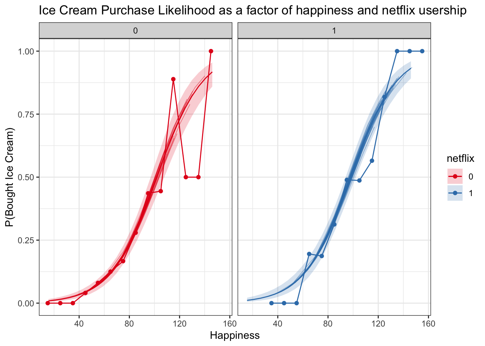